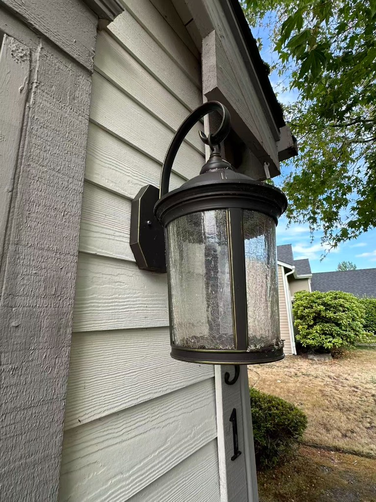
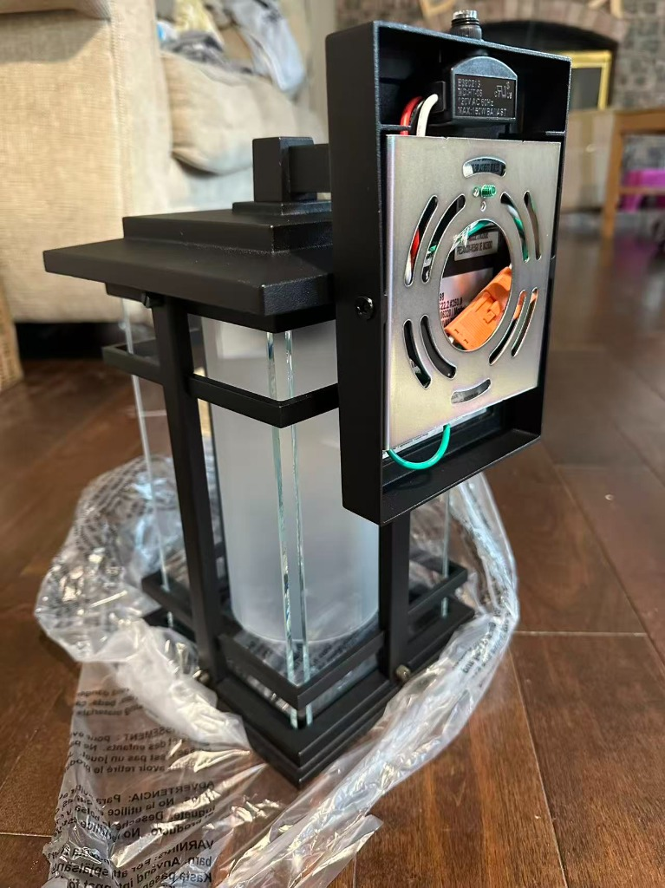
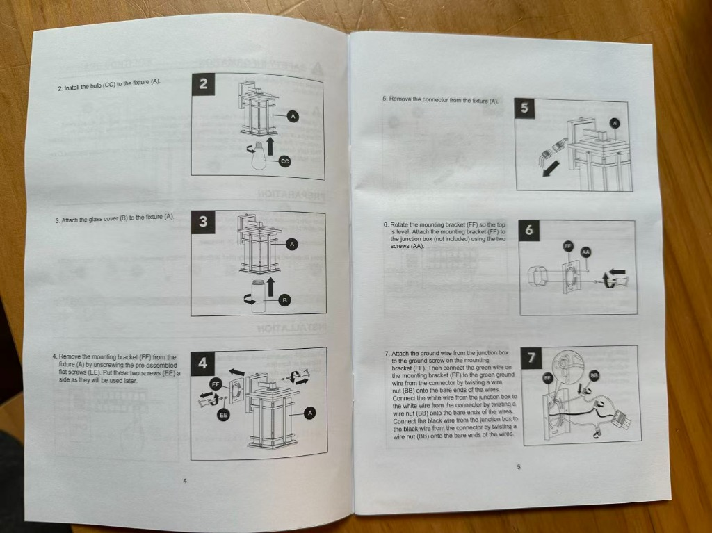
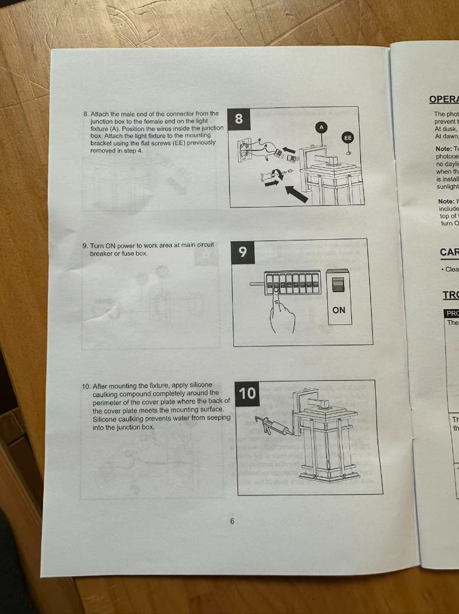
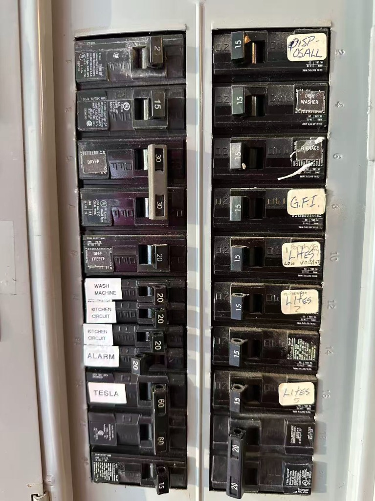
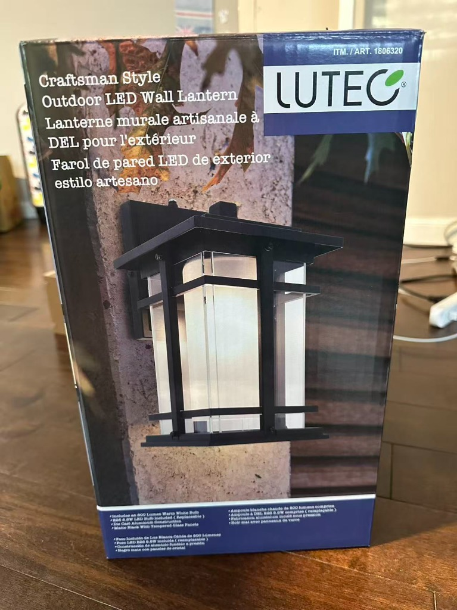

前门灯更换与安装详细指南 (Front Door Light Replacement Guide)
根据现场照片、新灯具结构、说明书以及配电箱标签，以下为您整理的详尽更换安装步骤与关键注意事项。
参考图示与现场确认

图 1：旧门灯现场实物（两侧带固定螺母）

图 2：新门灯背部结构、金属挂板与快接端子

图 3：安装说明书步骤 2 至步骤 7

图 4：安装说明书步骤 8 至步骤 10

图 5：家庭配电箱（右列第 10 槽位为 Porch 回路）
准备工作与工具清单
必要工具
- 十字螺丝刀、平口螺丝刀
- 测电笔 / 非接触式验电笔（电压测试仪，强烈建议）
- 剥线钳 / 钳子（备用）
- 硅酮防水胶（Silicone Caulk）及打胶枪（用于最后户外防水密封）
- 稳固梯子或矮凳
- 适用的灯泡（按说明书要求，如标准 E26 底座灯泡）
断电与验电（安全第一）
查找对应断路器（Breaker）
- 查看配电箱右侧第 5 组开关（第 10 槽位），手写标签为
Porch / LTS / LOW VOLTAGE（Porch 即门廊/前门灯回路）。 - 同时留意其下方的
LITES 2、LITES 5等照明回路。
切断电源与验电
- 将
Porch对应的 15A 开关扳到 OFF 位置。 - 如果不确定前门灯具体属于哪个，可先打开前门灯开关让旧灯处于通路状态（若旧灯还能微亮），或者关闭开关后，使用测电笔核验。
- 绝对准则：在身体触碰任何导线前，必须用验电笔靠近导线确认完全无电。
拆卸旧门灯
拆除旧灯固定螺母
- 从图 1 可见，旧灯底座左右两侧各有一颗固定滚花螺母/螺栓。
- 用螺丝刀或徒手拧下两侧的固定螺母。
割开旧密封胶
- 如果旧灯底座与墙体（木挂板）之间打有防水胶，用美工刀轻轻沿边缘划开，避免用力拉扯损坏外墙漆面或挂板。
取下旧灯并拆线
- 将旧灯轻轻向外拉出，露出接线盒（Junction Box）内的电线。
- 此时先用验电笔再次测量电线，确保安全断电。
- 拧开电线连接帽（Wire Nuts），将旧灯的黑线、白线、裸铜/绿线与墙体内出线分离。
- 拧下固定在墙壁接线盒上的旧金属安装挂板并取下。
组装新灯具（依据说明书步骤 2、3、4、5）
新灯采用带有快插端子（Quick Connector）的设计，安装非常便捷：
安装灯泡与玻璃罩（说明书 Step 2 & 3）
- 在地面将灯泡装入灯体
(A)。 - 将圆柱形磨砂玻璃罩
(B)安装并固定到灯体上。
拆下新灯背面的安装板（说明书 Step 4）
- 从图 2 实物可见，新灯出厂时金属安装背板
(FF)已预装在灯座背面，由左右两颗扁头小螺丝(EE)固定。 - 拧下这两颗螺丝
(EE)，将金属挂板(FF)与灯体分离，螺丝妥善收好。
拔下快接插头（说明书 Step 5）
- 从图 2 可以看到背板中间有一个橙色接线快插端子。
- 按下卡扣，将快接公头端与母头端拔开分离。
固定挂板与接线（说明书步骤 6、7）
固定安装背板 (FF) 到墙上接线盒（Step 6）
- 将墙壁接线盒里的电线穿过金属背板中心大孔。
- 使用两颗长安装螺丝
(AA)，将金属板固定到接线盒上。 - 调整背板水平度，注意背板朝向（水平保持平直，确保两侧固定小螺孔处于水平左右方向）。
连接电线（Step 7）
- 地线（Ground）：将墙内出来的裸铜线（或绿线）缠绕在金属板上的绿色接地螺丝上并拧紧；同时将快插端子带出的绿线与墙内地线用接线帽（Wire Nut
BB）拧紧在一起。 - 零线（Neutral - 白线）：将墙内出来的白色线与快插插头引出的白色线对齐，顺时针用接线帽
(BB)拧紧。 - 火线（Hot - 黑线）：将墙内出来的黑色线与快插插头引出的黑色线对齐，顺时针用接线帽
(BB)拧紧。 - 检查：接好后轻拉每根电线，确保没有松脱，铜线未裸露在接线帽外（建议用电工绝缘胶布辅助缠绕一圈加强保护）。
安装灯体与通电测试（说明书步骤 8、9）
插上快插端子
- 将带电线连接端子的公头与灯体上的母头插紧（听到“咔哒”卡扣到位声）。
固定灯体
- 将多余的电线小心塞入墙内接线盒中。
- 将灯体套在金属安装板上，对齐左右两侧的螺孔。
- 用之前拆下的两颗扁头螺丝
(EE)重新固定拧紧。
通电测试
- 前往配电箱，将
Porch断路器推回 ON。 - 打开室内前门灯开关测试：
- 注意：新灯顶部带有光敏传感器（Photocell，见实物图顶部凸起小传感器）。如果是在白天测试，传感器感应到强光可能不会自动亮起；测试时可用手指或黑布彻底遮住顶部的圆形感应头，等待 5~10 秒，确认灯是否正常点亮。
户外防水打胶密封（说明书步骤 10，极其关键）
测试无误后，进行最后一步防雨密封：
- 使用户外防霉硅酮密封胶（Clear 或配合外墙颜色的 Silicone Caulk）。
- 沿着灯体底座与墙面接缝处，打胶密封顶部及左、右两侧。
- 特别注意：底座的最底部务必留出一段约 1-2 厘米的小缝隙不要打胶（Weep Hole 泄水孔）。
- 原因：万一有微量雨水或冷凝水渗入，底部的缝隙可让水分自然排出，防止内部积水浸泡电线导致跳闸或短路故障。
lutec_craftsman_lantern_product_links
根据新灯外包装箱实物照片与条码信息，进一步核实了该灯具的品牌型号、销售渠道背景以及在各大主流电商平台的对应购买链接：

图 6：LUTEC Craftsman 外包装箱实物（右上角标注 Costco 专供货号 1806320）
产品核心规格与编码
- 品牌商标：LUTEC
- 产品名称：Craftsman Style Outdoor LED Wall Lantern（美式工艺风格户外 LED 壁灯）
- Costco 专供货号（ITM. / ART.）：
1806320 - 生产厂商内部型号（Model #）：
5217801012 - 核心功能亮点：配备内置 Dusk-to-Dawn（黄昏至黎明）光敏传感器、快接安装挂板端子（Quick Connect Bracket）、附赠 800 流明 E26 暖白光可更换 LED 灯泡、压铸铝耐候材质。
渠道背景说明
右上角的 ITM. / ART. 1806320 属于典型的 Costco 独家专属料号。该版本为品牌商专为北美 Costco 仓储会员店定制发售，包含专供的一体化快插接线端子与定制灯泡套件，因此在 Amazon 和 Home Depot 通常不会以一模一样的 Costco 内部编号（1806320）作为独立直营商品长期常驻。
各主流电商与零售渠道链接
1. Costco 直营与查询链接
- Costco 官网商品查询 (Item 1806320)：可在搜索框输入
1806320查看本地 Warehouse 仓库提货库存与送货状态。 - Costco Canada 对应产品档案：提供同款型号的详细规格参数列表。
2. Amazon (亚马逊) 官方与同款系列
LUTEC 在 Amazon 设有官方品牌店铺，提供同款 Craftsman 造型及相同 Dusk-to-Dawn 光感特性的壁灯：
- Amazon - LUTEC 户外黄昏黎明感应壁灯检索直达
- Amazon - 美式 Craftsman 风格黄昏黎明户外壁灯精选
3. The Home Depot (家得宝) 官方品牌专区
The Home Depot 设有 LUTEC 户外工程灯具专区：
- The Home Depot - LUTEC 户外照明与壁灯品牌专区
官方售后保修与备件咨询
该灯具提供 3 年有限质保，如需补充备用玻璃罩、螺母小配件或申请售后：
- LUTEC USA 官方服务热线：1-877-714-8669（美东时间周一至周五 9:00 AM - 5:00 PM EST）
- 官方支持邮箱：service@lutec.net
- 官方网站：www.lutec.com